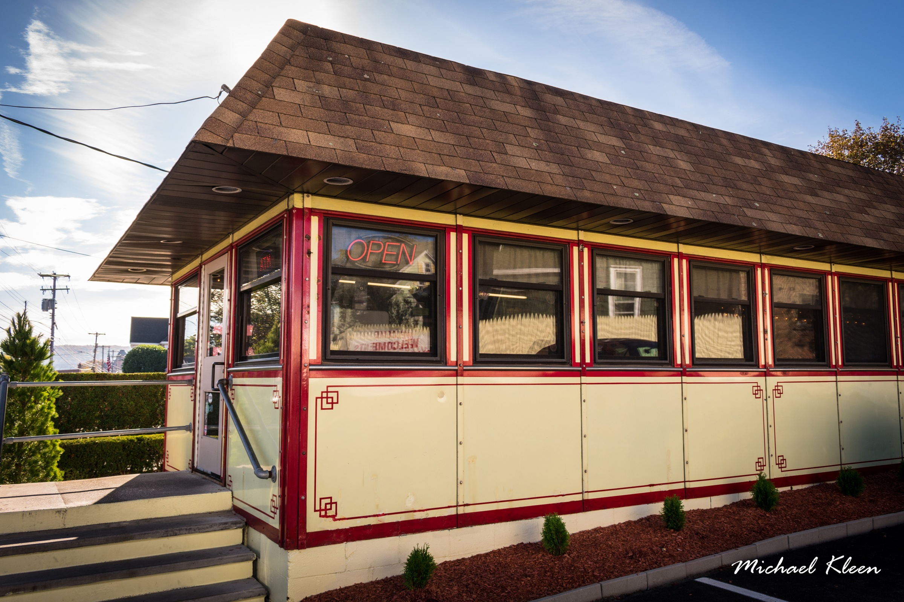

This project tries to explore and make meaning of the transactional information of a business
venture to create insight for stakeholders to make effective decision. The concept of analyzing a business,
you need to have an overview knowledge of structure, planning and performance of the said business. With this project I was able to help business owner see where and how to improve their business by providing them with
key metrics and the right visual information.

Data cleaning is a vital process for every data analytics project you embark on. It serves as a foundation
to every other building task involved in any project.
This project, we used power query as a tool to process and clean the data.
Power query have some amazing built-in function that helps reducing and transforming a large dataset to your suitable preference.

Danny seriously loves Japanese food so in the beginning of 2021,
he decides to embark upon a risky venture and opens up a cute little restaurant
that sells his 3 favourite foods: sushi, curry and ramen.
Danny’s Diner is in need of your assistance to help the restaurant stay afloat -
the restaurant has captured some very basic data from their few months of operation
but have no idea how to use their data to help them run the business

Danny was scrolling through his Instagram feed when something really caught his eye -
“80s Retro Styling and Pizza Is The Future!”
Danny was sold on the idea, but he knew that pizza alone was not going to help him get seed funding to expand his
new Pizza Empire - so he had one more genius idea to combine with it - he was going to Uberize it - and so Pizza Runner was launched
This project is a social good project, created out of the burden to help
university seeking student navigate through numerous institution and help
them make effective decision when choosing a university to study.
This dashboard highlight some key metrics that each institution represent such as
international student acceptance, classification of university by how invested they are in research
and best country or region to study or country with best institution by their ranking score.

The NESG Household Survey 2018 provides a comprehensive dataset on household living conditions in Nigeria.
This data is crucial for shaping policies and monitoring Nigeria's progress. Participants will use this dataset to create visualizations and reports highlighting key findings and analytical insights.